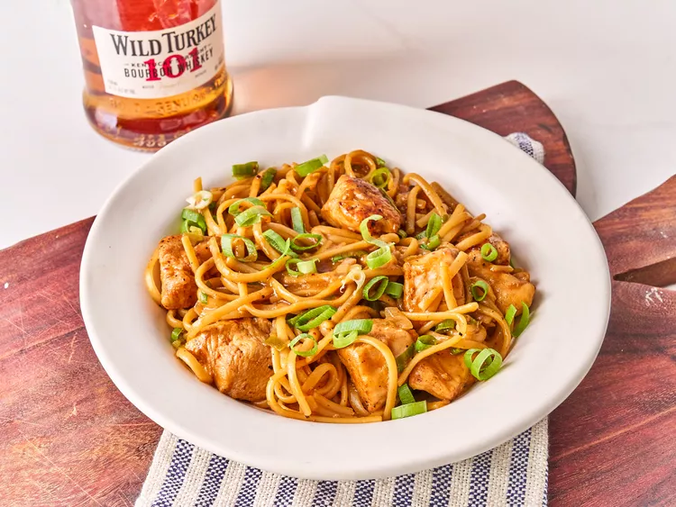

One Pan Chicken and Noodles

Description
This recipe is a cozy, no-fuss comfort meal that’s perfect for busy weeknights.
Tender chicken and soft egg noodles simmer in a light, savory broth for a quick, comforting meal. Simple ingredients, big flavor.
Ingredients
- 1 ¼ pounds boneless chicken breasts or tenders, cut into 1-inch pieces
- 1/2 teaspoon paprika
- 1 ½ teaspoons kosher salt, plus more to taste
- 1 ¾ cups chicken stock, plus more as needed
- 1/4 cup bourbon
- 2 cloves garlic, minced
- 1 tablespoon neutral oil
- 2 tablespoons butter
- 4 green onions, sliced, whites and green parts separated
- 1/4 teaspoon crushed red pepper
- 8 ounces linguine pasta
Steps
- Heat 1 tablespoon oil in a large deep skillet over medium-high heat. Add chicken and cook, stirring occasionally, until browned on all sides (chicken will not be cooked through at this point). Remove chicken from skillet and set aside.
- Add butter to skillet and melt over medium-high heat. Add the white parts of the green onions and garlic and cook, stirring constantly, 1 minute. Add crushed red pepper and pasta and stir to coat in butter mixture. Pour in reserved bourbon mixture and stir until everything is well incorporated, scraping any browned bits from the bottom of the skillet. Bring mixture to a boil and reduce to simmer, stirring often to keep the noodles from sticking.
- Add chicken and any accumulated juices into the skillet. Stir and cook, stirring occasionally, until pasta is cooked and sauce has thickened, 10 to 12 minutes. Add additional stock or water as needed to keep the mixture saucy until pasta is cooked. Season to taste with salt. Stir in green onions and serve immediately.
Home